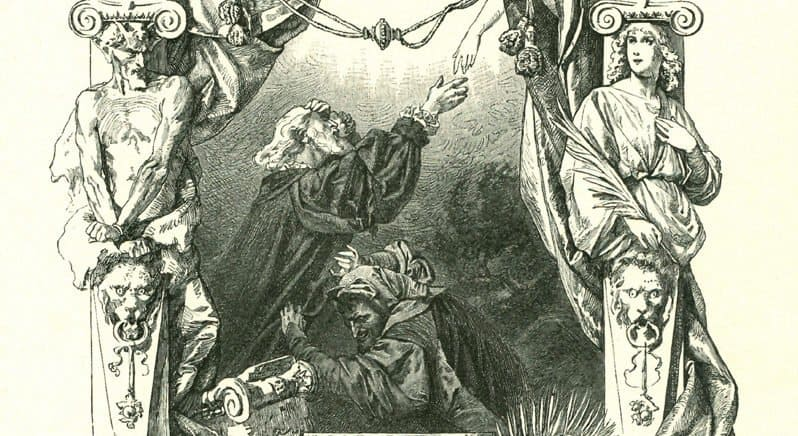
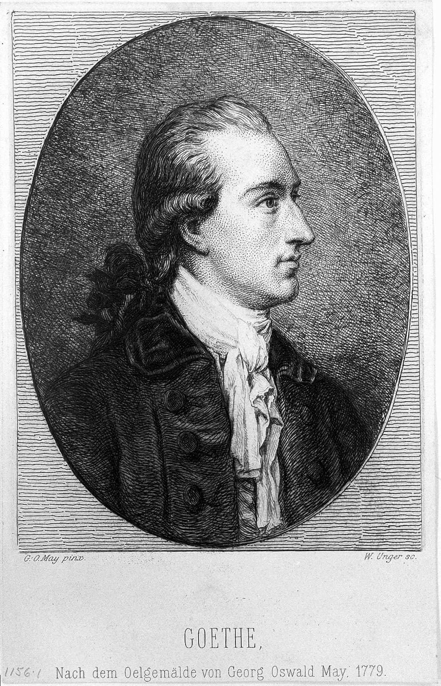
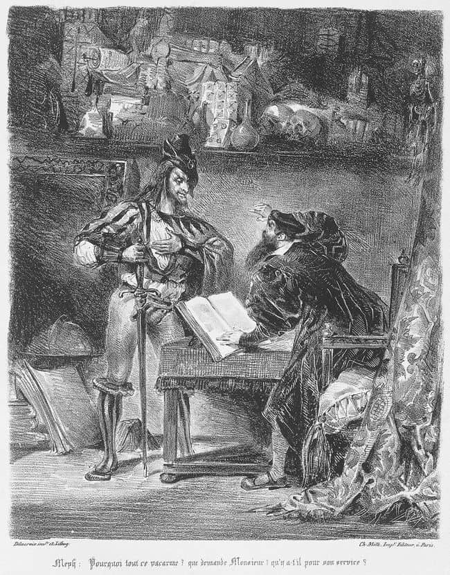
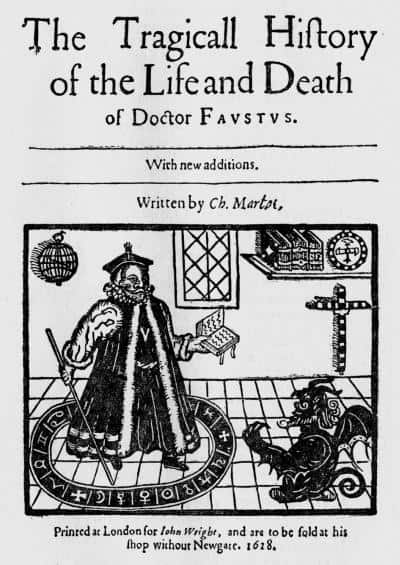
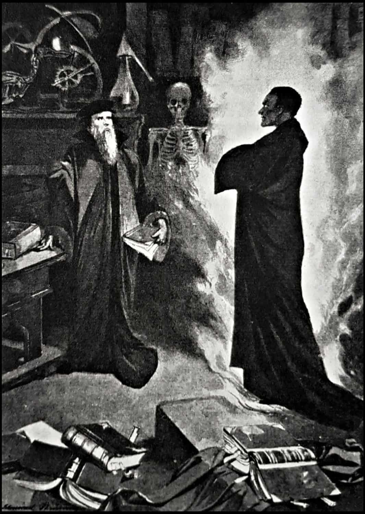

«Фауст» Гёте — что нужно знать об одном из самых сложных произведений мировой литературы
Нередко «Фауст» воспринимается как история о том, как главный герой, ученый, заключил сделку с нечистым духом. Однако из народной легенды с развлекательным сюжетом Иоганну Гёте удалось создать то, что Александр Пушкин назвал «величайшим созданием поэтического духа». Что же такого особенного в «Фаусте»? Во что верил Гёте и его герой? Кто такой Мефистофель? О чем эта грандиозная поэма — труд всей жизни гениального писателя всемирного значения? Отвечаем на эти и другие вопросы.
Иоганн Гёте — атеист и алхимик?
Нет. В юности Гёте пережил увлечение алхимической литературой, что потом вылилось в интерес к естественным наукам, которым писатель был верен на протяжении всей своей жизни. Также Гёте прекрасно знал Библию. В его семье ее читали на латинском и греческом языках. В автобиографии писатель рассказывает о том, как в детстве был очарован Ветхим Заветом и пытался читать его на древнееврейском языке с помощью учителя. Для него Библия была собранием поразительных историй о страданиях и радостях «героев веры», живших в непоколебимой уверенности в том, что Бог рядом, Он посещает их, сострадает, ведет их и спасает от бедствий. Бог в этих историях — знакомый и близкий, и когда ты смотришь на Него глазами персонажей, то и для тебя он кажется родным.

Гёте пережил в молодости сложную эволюцию взглядов, и не принадлежал, по его словам, ни к противникам, ни к отрицателям христианства. Он уважал религиозное чувство других и говорил о христианской религии уважительно и серьезно. Церковным человеком он не был, нередко признавал, что «слаб в вере», но к самой религии относился с глубоким почтением. В тех произведениях Гёте, где затрагиваются религиозные темы, он никогда не выступает как богослов, а только как художник слова.
«Заметим, кстати, что тот взгляд на мир, который транслируется в «Фаусте», может вызывать вопросы с христианской точки зрения.
Вы наверняка, даже если не читали Гете, знаете фразу: «Я часть той силы, что вечно хочет зла и вечно совершает благо».
Русскому читателю она знакома благодаря роману Булгакова «Мастер и Маргарита». Однако герой Булгакова на самом деле цитирует текст Гете: «Частица силы я, желавшей вечно зла, творившей лишь благое». Из этих слов можно сделать вывод (и некоторые читатели его делают!), что зло в мире — не так уж и бесполезно. Оно как бы дополняет добро, а в сложном сочетании добра и зла рождается гармония земной жизни. Однако христиане не видят в зле основания какой бы то ни было гармонии. Зло — это лишь порча добра, а не «естественная» составляющая мира. Разумеется, «Фауст» — не богословский трактат и не справочник по учению Церкви, и Гете вряд ли хочет подорвать основы веры. Он — поэт, и создает такую картину мира, которая позволила бы придать сюжету максимально высокий драматический накал. Обратите внимание, что в самом начале «Фауста» писатель настоятельно предупреждает, что перед нами будет разворачиваться не подлинная жизнь, а поэтический вымысел.
Даром свыше Гёте считал поэзию: «истинная поэзия возвещает о себе тем, что она, как мирское Евангелие, освобождает нас внутренней своей радостью и внешней прелестью от тяжкого земного бремени».
Когда император Наполеон впервые увидел Гёте, то воскликнул: «Вот это человек!»
Действительно, Гёте был исключительным человеком своего времени: знатоком языков, поэтом, ученым, государственным деятелем, художником, актером и театральным режиссером, долго руководившим Веймарским театром; человеком, который одновременно со стихами, поэмами, романами, драмами, критическими статьями писал сочинения по естествознанию, искусствоведению, занимался химическими опытами, оптикой, минералогией, геологией, ботаникой, зоологией, педагогикой, вопросами организации войск, финансами, народным просвещением, горнодобывающей промышленностью и ткацким ремеслом. Он знал передовую философию своего времени, интересовался взглядами Канта, Фихте и Спинозы, чьи натурфилософские идеи были наиболее близки ему. Гёте восторгался драмами Шекспира, полотнами Леонардо да Винчи и Рафаэля, увлекался античным искусством, народной поэзией, принимал у себя французскую писательницу Анну де Сталь и русского поэта Василия Жуковского. Таким человеком был Иоганн Гёте.
Главная идея «Фауста»: союз с чёртом до добра не доведет?

Нет, главная идея состоит не в этом. Гёте вообще был решительно против определения главной идеи произведения и говорил о любопытствующих: «Вот они подступают ко мне и спрашивают: какую идею хотел я воплотить в «Фаусте»? Как будто я сам это знаю и могу выразить! “С неба через мир в преисподнюю” — вот что я мог бы сказать на худой конец; но это не идея, это процесс и действие. Далее, если черт проигрывает пари и если среди тяжелых заблуждений непрерывно стремящийся ввысь к добру человек достигает спасения, то в этом, правда, есть очень действенная, много объясняющая, хорошая мысль. Но это не идея, лежащая в основе целого и пронизывающая каждую его отдельную сцену. В самом деле, хороша бы была шутка, если бы я пытался такую богатую, пеструю и в высшей степени разнообразную жизнь, которую я вложил в моего “Фауста”, нанизать на тощий шнурочек одной единой для всего произведения идеи!»
Читая «Пролог в театре» к «Фаусту», можно заметить, что он заканчивается тем же:
Через землю с неба в ад
Вы мерной поступью пройдите.
(Здесь и далее цитаты из «Фауста» в переводе Николая Холодковского)
Гёте сфокусировался на исключительной личности, запечатлел расцвет индивидуальности едва ли не впервые в художественной литературе.
Вы мерной поступью пройдите.
(Здесь и далее цитаты из «Фауста» в переводе Николая Холодковского)
Гёте сфокусировался на исключительной личности, запечатлел расцвет индивидуальности едва ли не впервые в художественной литературе.
Человек у Гёте не только осознал себя как личность, он взвалил на свои плечи все бремя нерешенных вопросов и стремится дать на них ответы. Таким образом, судьба главного героя оказывается связанной со всем человечеством.
Гёте сам придумал Фауста?

Нет. В основу своего произведения Гёте положил легенду об ученом докторе Фаусте, возникшую в Германии в XVI веке, о которой писатель узнал еще в детстве. Предание гласило, что Фауст занимался черной магией, вызывал духов, продал дьяволу душу, а за это посланец ада исполнял любые его желания. Фауст существовал на самом деле. Известен ряд свидетельств о нем: документальных и легендарных. Он учился в Гейдельбергском университете, составлял гороскопы, странствовал, якобы творил различные чудеса, например, мог подняться в воздух. Дьявол был неизменным спутником во всех рассказах о Фаусте. Сохранились десятки разрозненных историй о докторе, которые в конце XVI века, в родном городе Гёте Франкфурте-на-Майне, были собраны в одну книгу «История о докторе Фаусте, знаменитом чародее и чернокнижнике, как он на некий срок подписал договор с дьяволом, какие чудеса он в ту пору наблюдал, сам учился и творил, пока, наконец, не постигло его заслуженное воздаяние». Книга должна была служить «устрашающим и отвращающим примером и искренним предупреждением всем безбожным и дерзким людям».
Тем самым сразу определяется отрицательное отношение к Фаусту. Таким оно остается в последующих обработках легенды, которая была очень популярна благодаря своему фантастическому характеру.
Людей эпохи Возрождения тянуло к магии, так как с ее помощью они хотели постигнуть тайны природы. Создатели первых легенд о Фаусте рассказывали о богоотступнике для устрашения, ни в коем случае не стремясь вызвать сочувствие к человеку, вступившему в союз с нечистой силой.
Английский драматург Кристофер Марло в «Трагической истории доктора Фауста» (1592) впервые показал трагизм судьбы героя. Он опоэтизировал личность Фауста, выявил его смелость духа.
Английский драматург Кристофер Марло в «Трагической истории доктора Фауста» (1592) впервые показал трагизм судьбы героя. Он опоэтизировал личность Фауста, выявил его смелость духа.
Как Бог и Мефистофель в книге относятся к Фаусту?

Бог в произведении Гёте — символ добрых начал. Носителем же зла является Мефистофель. Оба персонажа появляются в так называемом «Прологе на небесах» — одной из самых значимых сцен в трагедии, где в концентрированной форме выражена тема всего произведения и где Бог и Мефистофель затевают некий спор.
Мефистофель сосредотачивает свое внимание на Земле и ее жителях. Жизнь людей — каждодневная суета и мучение – так определяет Мефистофель человеческое бытие. Причина этого, по его мнению, в природе человека. Мефистофель презирает людей и не считает человеческий разум искрой божественного духа, которая заложена в человеке. Как считает черт, люди в силу своей дурной природы, сами портят жизнь, и нечистому даже нет необходимости творить зло на земле. Господь видит в речах Мефистофеля свойственный ему дух полного отрицания. Бог спрашивает, знает ли он Фауста:
Господь. Ты знаешь Фауста?
Мефистофель. Он доктор?
Господь. Он мой раб.
Мефистофель. Он доктор?
Господь. Он мой раб.
Для Мефистофеля Фауст – обычный человек. Когда Бог называет его своим рабом, Он тем самым опровергает мнение Мефистофеля об абсолютном ничтожестве человека. В нем есть божественное начало – вот почему для Бога он не просто доктор, а существо, не чуждое Ему самому.
У Мефистофеля же свое мнение о Фаусте и его возвышенных стремлениях:
То с неба лучших звезд желает он,
То на земле — всех высших наслаждений,
И в нем ничто, — ни близкое, ни даль, —
Не может утолить грызущую печаль.
То на земле — всех высших наслаждений,
И в нем ничто, — ни близкое, ни даль, —
Не может утолить грызущую печаль.
Мефистофелю Фауст кажется безумным мечтателем, желающим невозможного. Богу же известны и неудовлетворенность Фауста, и его искания, и Он знает, что они принесут свои плоды. Бог защищает Фауста:
Пока еще умом во мраке он блуждает;
Но истины лучом он будет озарен!
Сажая деревцо, уже садовник знает,
Какой цветок и плод с него получит он.
Но истины лучом он будет озарен!
Сажая деревцо, уже садовник знает,
Какой цветок и плод с него получит он.
Мефистофель уверен в противоположном: ничего у Фауста не выйдет. Его легко сбить с пути, отвлечь от возвышенных устремлений. Дьявол предлагает Богу пари:
Бьюсь об заклад: он будет мой!
Прошу я только позволенья, —
Пойдет немедля он за мной.
Прошу я только позволенья, —
Пойдет немедля он за мной.
Бог соглашается на спор, так как уверен в Фаусте: ему свойственно заблуждаться, ошибки неизбежны, но «чистая душа в своем исканье смутном сознаньем истины полна!». Бог верит в человека, поэтому позволяет Мефистофелю взяться за Фауста, заранее уверенный в том, что дьявол будет посрамлен.
В речах Мефистофеля и Бога сталкиваются два противоположных мнения о человеке. Нечистый полагает, что человеческая жизнь — суета, не меняющая ничего ни в его существовании, ни в самом человеке. В словах Бога выражено убеждение, что поиски обязательно приведут к совершенствованию человека. Так считал сам Гёте. Для него было несомненно, что рост, возвышение, развитие составляет закон жизни, сущность человека. Для Господа в произведении этот спор даже не имеет смысла, так как Он заранее убежден в победе. Но Мефистофелю позволено совратить человека с пути искания истины не для того, чтобы доставить удовольствие черту, а потому, что так нужно для самого человека. Бог уверен в том, что положительные качества Фауста сильнее любых пошлых и дурных соблазнов. Таким образом, Фауст подвергается испытанию как представитель всего человеческого рода. На нем и будет проверяться человечество.